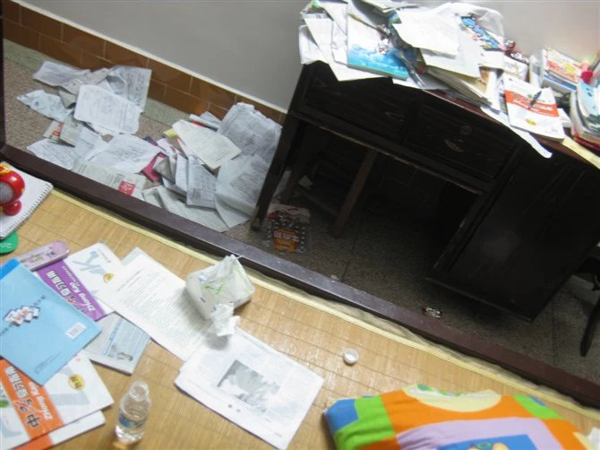
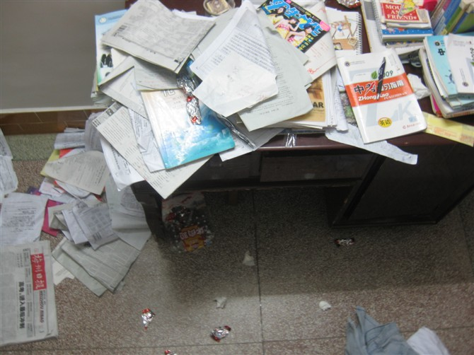

笔录，2009，仲夏
（一）
考试前的一段时间，完完全全的烦躁，看到试卷就想撕，不过在学校还是保持平静。只是到后来，那些试卷惹到我，干脆就甩手不读了，只有在上课的时候听一下。至于在家，就看看电视，玩玩电脑，睡睡觉。就连考试的那几天，我还一直在看《花样男子》。（这些话，只有在成绩出来之后才敢说，要不然，如果考不上，他们他们他们，就会以这个为借口，念我一辈子。）虽然之前时不时的会紧张，但也从来没想过如果考不进某校会如何（貌似也是潜意识的回避这个问题），也从来没有给过自己太大的压力，甚至可以说，从来没有受到过压力，在他们他们他们一直对着我的耳朵念时，我就觉得，关你鸟事。不知道是不是因为我心态太好了，所以当考试真正来临时，丝毫没有杂念，只有兴奋..真的真的觉得很兴奋..还有，上刑场的感觉。全身放松，想说，死就死吧。


以上是在考试前期房间的照片，我整个人对着这些书就是烦，有一次，一气之前我把书桌上的书全给扫地上了，从此，也就没有收拾过。可见我当时多烦躁。
考完试之后，才突然紧张起来，想到如果按正常水平发挥，是没问题的，可不怕一万，就怕万一。然后是漫漫长的等待，等成绩。有时候，在看电视或躺床上发呆，就会想到如果考上某校我要怎样怎样，但又想，如果我一旦考不上，就完了。首先的一点，不能抛开一切，尽情的玩。这期间，当朋友问暑假有啥计划时，总是给自己留条后路的回答：考得上就出去料，考不上就不知道咯。今天下午，放榜。可我一直查不到，最后还是由朋友帮忙，感谢啊。得知成绩后，虽有点惊讶，不过还是有喜悦的火焰燃烧啊燃烧…等心情平复下来后，才发现，一身冷汗。
（二）
被点名了
不是很想写的，因为这玩意跟写作文差不多，又没人看。不过迫于传卷人的淫威….
为了不至于使阅读率为0，所以就放这篇文文里来啦，而且只挑选了我喜欢的问题回答。哈..
1）我的大名：Cracker（我也不会读，只是觉得好看，哈
2）性别：女
3）誰傳給我：老姐
4）對于感情給你一次吃回頭草的機會你吃嗎？：不抗拒
5）現在最想做的事：日子能过得充实6)最喜歡的藝人：周杰伦
7）最讨厌的顔色：橙色8）半夜敢不敢起來上廁所：敢
9)要是讓你做一件驚天動地的事：当俄罗斯总统，把美国给灭了
10)睡相怎麽樣：很好
11)現在時間：2009年7月2日22：0712)有沒有你覺得厭倦的人：只有不耐烦的
13)朋友在你心中重要不？：看哪种朋友，哪种情况下
14)你喜歡的季節：春夏秋冬
15)你討厭什麽性格的人：不自量力的人
16)睡觉睡到几點：看情况，5点到下午5点不等
17)最傷心，難過的時候你會做什麽：到目前为止，我的人生还没有遇到这种“最”伤心、難過的时刻
18)喜歡一個人去逛街嗎：有时候喜欢19)你希望被点到吗：不希望
一被點到必須填，不填代表你討厭傳給你的人和問卷（霸王条款）
二請老實點回答每一個問題
三填完點給十個小朋友，不可以不點
四點完後通知哪十位小朋友被點到了
A、被點到名字的要在自己的空間裏寫下自己的答案，然後去掉一個你最不喜歡的問題再加上一個你的問題，仍然組成問題，傳給其它10個人，列出其它10個需要回答問題的人的名字，還要到這10個人的空間裏留言通知對方——你被點名了，被點名者不得拒絕回答問題，而且回答必須真實，完成遊戲的人
將會永遠得到大家的祝福。
B、這10個人要在自己的空間裏注明是從哪裏接到的，並且再傳給其它10個人，讓遊戲繼續下去，不得回傳。被點到名字的人將會得到大家的祝福，並且
所有美好的願望都會在不久的將來實現；
你，你，你，你，你，你，你，你，你。（看到日志的前十个人）以上被我点名的+把日志转到自己空间然后编辑作答包
记得要继续点名把这份幸福永远的传下去不得回点哦~~
（三）
致：亲爱的同学、朋友们
至今，我们人生即将翻开新的一页。
只有一个祝福：要越走越好。
看过这篇日志的人，请，假如以后在街上遇见我，至少要跟我SAY++HELLO.
另外，假如我结婚了，你们的红包一定要到。
写信人：Cracker
时间：09年，仲夏